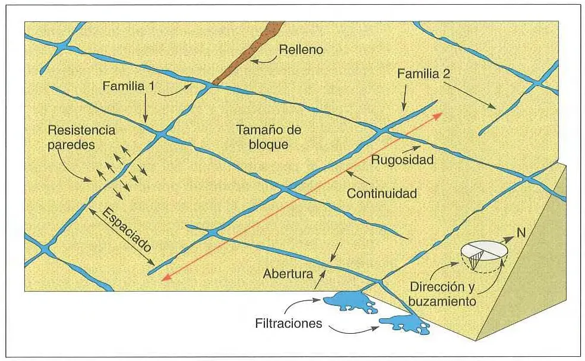
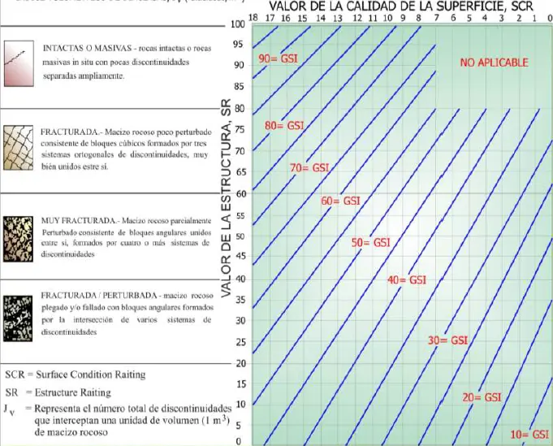

Mecánica de rocas: el macizo rocoso y su clasificación#
Importante
Objetivos de aprendizaje
Diferenciar la roca intacta del macizo rocoso y explicar por qué las discontinuidades controlan el comportamiento de este último.
Describir las discontinuidades con los parámetros recomendados por la ISRM.
Calcular el RQD y clasificar un macizo con los sistemas RMR, Q y GSI.
Construir un modelo geotécnico de un macizo rocoso a partir de la información geológica.
Roca intacta y macizo rocoso#
La mecánica de rocas distingue dos objetos de estudio. La roca intacta, o matriz rocosa, es el material sin discontinuidades que se ensaya en el laboratorio en probetas de pocos centímetros. Puede idealizarse como un medio continuo, homogéneo, isotrópico y elástico lineal. El macizo rocoso es el conjunto de bloques de roca intacta separados físicamente por discontinuidades (diaclasas, fallas, planos de estratificación, foliación) que pueden contener o no material de relleno. Mecánicamente, el macizo es un medio discontinuo, heterogéneo, anisotrópico y no elástico, con una resistencia a la tracción que en la práctica puede considerarse nula.

Figura 15 Roca intacta frente a macizo rocoso: el cambio de escala introduce las discontinuidades.#
Las propiedades mecánicas e hidráulicas del macizo están gobernadas por las de la roca intacta y, sobre todo, por el número, la orientación, la naturaleza y las condiciones de las discontinuidades. Una cuarcita con resistencia a la compresión de 200 MPa puede formar un talud inestable si tiene un sistema de diaclasas persistentes que buzan hacia la cara del corte. Una lutita débil puede ser estable si su estratificación es favorable. Esta es la razón por la que la mecánica de rocas aplicada es, en buena medida, geología estructural cuantitativa.
Las discontinuidades#
Una discontinuidad es cualquier plano de origen mecánico o sedimentario que separa los bloques de roca intacta. Su resistencia a la tracción es muy baja o nula, y su comportamiento mecánico queda caracterizado por la resistencia al corte de sus paredes o del material de relleno. Los tipos principales son los planos de estratificación, las diaclasas, los planos de foliación o esquistosidad, los contactos litológicos, las venas, los diques, las superficies de falla y las zonas de cizalla.


Figura 16 Tipos de discontinuidades en un macizo rocoso.#
La Sociedad Internacional de Mecánica de Rocas [ISRM, 1978] recomienda describir cada familia de discontinuidades con los siguientes parámetros:
Orientación. Se expresa con la dirección de buzamiento y el buzamiento del plano. Su relación con la geometría de la obra (la cara de un talud, el eje de un túnel) determina qué mecanismos de falla son cinemáticamente posibles.
Espaciado. Es la distancia perpendicular entre discontinuidades adyacentes de una misma familia y determina el tamaño de los bloques. Cuanto menor sea el espaciado, más pequeños los bloques y más se acerca el macizo al comportamiento de un suelo.
Persistencia o continuidad. Es la extensión del plano. Una discontinuidad persistente puede formar una superficie de falla completa; una no persistente obliga a que la falla corte a través de puentes de roca intacta.
Rugosidad. Es la irregularidad de las superficies, que contribuye de manera decisiva a la resistencia al corte. Se describe a dos escalas, la ondulación y la aspereza, y se cuantifica con el coeficiente JRC de Barton and Choubey [1977], que se estima comparando el perfil de la discontinuidad con perfiles tipo.
Abertura. Es la separación entre las paredes. Controla la permeabilidad del macizo.
Relleno. Es el material entre las paredes. Un relleno arcilloso blando puede reducir la resistencia de la discontinuidad a la del relleno.
Resistencia de las paredes. Se estima en campo con el martillo de Schmidt o con la picota, y se expresa como JCS. Las paredes suelen estar más meteorizadas que la roca interior.
Filtraciones. Indican la presencia de agua, que reduce la resistencia efectiva y genera presiones sobre los bloques.
Número de familias y tamaño de bloques. La combinación de las familias define la forma de los bloques (tabulares, columnares, cúbicos) y su volumen.

Figura 17 Perfiles típicos de rugosidad y valores asociados del coeficiente JRC. Fuente: Barton y Choubey (1977).#
Rock Quality Designation (RQD)#
El RQD fue propuesto por Deere et al. [1967] como un índice de la calidad del macizo basado en los testigos de perforación. Se define como la suma de las longitudes de los fragmentos intactos mayores de 10 cm dividida por la longitud total del tramo perforado, expresada en porcentaje:
La perforación debe ser de diámetro NX (54,7 mm) o mayor, y deben excluirse las fracturas producidas por la perforación o la manipulación. Cuando no hay testigos, Palmström [1982] propuso estimarlo a partir del número de discontinuidades por metro cúbico, \(J_v\):
El RQD varía entre 0 % (muy mala calidad) y 100 % (excelente). Es simple y reproducible, pero no considera la orientación, la rugosidad ni el relleno de las discontinuidades. Además es sensible a la dirección de la perforación respecto de las familias de discontinuidades.
Rock Mass Rating (RMR)#
El RMR fue propuesto por Bieniawski [1989] para túneles y revisado con más datos de campo. Suma las puntuaciones de seis parámetros:
donde \(A_1\) es la resistencia a la compresión uniaxial de la roca intacta (0 a 15 puntos), \(A_2\) el RQD (3 a 20), \(A_3\) el espaciado de las discontinuidades (5 a 20), \(A_4\) la condición de las discontinuidades, que incluye persistencia, abertura, rugosidad, relleno y meteorización (0 a 30), \(A_5\) las condiciones de agua (0 a 15) y \(A_6\) el ajuste por la orientación de las discontinuidades respecto de la obra (0 a −60 en taludes). El RMR varía entre 0 y 100 y define cinco clases: I, muy buena (81 a 100); II, buena (61 a 80); III, regular (41 a 60); IV, mala (21 a 40); y V, muy mala (menos de 20).
Índice Q#
El sistema Q fue desarrollado por Barton, Lien y Lunde (1974) en el Instituto Geotécnico Noruego a partir de casos de túneles:
El primer cociente representa el tamaño de los bloques (\(J_n\) es el índice del número de familias de discontinuidades), el segundo la resistencia al corte entre bloques (\(J_r\), rugosidad; \(J_a\), alteración y relleno) y el tercero el esfuerzo activo (\(J_w\), agua; \(SRF\), factor de reducción por esfuerzos). Q varía en escala logarítmica entre 0,001 y 1000. Combinado con la dimensión equivalente de la excavación, permite seleccionar el sistema de soporte. Bieniawski propuso una correlación aproximada entre ambos sistemas: \(RMR\approx 9\ln Q+44\).
Geological Strength Index (GSI)#
El GSI, propuesto por Hoek (1994) y Hoek et al. [1995], estima la calidad del macizo a partir de una observación geológica directa: el grado de fracturación y trabazón de los bloques (eje vertical del ábaco) y las condiciones de las superficies de las discontinuidades (eje horizontal). Es el sistema más cercano al lenguaje del geólogo, porque no requiere ensayos sino una buena descripción de afloramientos, y su función principal es alimentar el criterio de falla de Hoek y Brown para el macizo rocoso, que se estudia en el capítulo Resistencia de las rocas y de los macizos rocosos. Para macizos de calidad media a buena se puede estimar como \(GSI\approx RMR_{89}-5\).


Figura 18 Ábaco para la estimación del GSI a partir de la estructura del macizo y de la condición de las discontinuidades.#
Ejemplo resuelto: RQD, RMR, Q y GSI
En una perforación en un granitoide moderadamente meteorizado, un tramo de 1,50 m recuperó fragmentos de 25, 18, 6, 12, 4, 30, 8 y 17 cm, además de material fino. La resistencia a la compresión uniaxial de la roca es 80 MPa. Hay tres familias de diaclasas con espaciado entre 0,2 y 0,6 m, superficies ligeramente rugosas, abertura menor de 1 mm y paredes muy meteorizadas. El macizo está húmedo.
RQD. Solo cuentan los fragmentos de 10 cm o más: \(25+18+12+30+17=102\) cm, de modo que \(RQD=102/150=68\,\%\), calidad regular.
RMR (Bieniawski, 1989). Resistencia de 80 MPa: 7 puntos. RQD de 68 %: 13. Espaciado de 0,2 a 0,6 m: 10. Condición de las discontinuidades: 20. Húmedo: 10. Sin ajuste por orientación, \(RMR=7+13+10+20+10=60\), clase III (regular), en el límite con la clase II.
Q. Con \(J_n=9\) (tres familias), \(J_r=1{,}5\) (rugosa, plana), \(J_a=2\) (paredes ligeramente alteradas), \(J_w=1\) y \(SRF=1\): \(Q=(68/9)(1{,}5/2)(1/1)=5{,}7\), calidad regular. La correlación \(RMR\approx9\ln(5{,}7)+44=59{,}7\) coincide con el valor calculado.
GSI. \(GSI\approx60-5=55\), que corresponde a un macizo de bloques con superficies regulares a pobres en el ábaco.
Del macizo al modelo geotécnico#
Las clasificaciones son una herramienta de comunicación y de diseño preliminar, pero no sustituyen el modelo geológico. En un mismo talud, el RMR puede ser 60 en promedio y, sin embargo, una sola falla con relleno arcilloso orientada desfavorablemente controla la estabilidad. El modelo geotécnico de un macizo debe identificar las unidades de comportamiento homogéneo, las estructuras mayores (fallas y zonas de cizalla) que se tratan individualmente, las familias de discontinuidades con su orientación estadística, el perfil de meteorización y las condiciones hidrogeológicas. Las clasificaciones se aplican a cada unidad, y las estructuras mayores se analizan como superficies de debilidad con su propia resistencia.

Figura 19 Modelo geotécnico de un macizo rocoso.#
Lecturas recomendadas#
Ejercicios#
Calcule el RQD de un tramo de 3 m en el que \(J_v=12\) discontinuidades por metro cúbico, y compárelo con un tramo con testigos de 15, 22, 9, 40, 11 y 35 cm.
¿Por qué el RQD de un macizo con una sola familia de diaclasas paralelas al eje de la perforación puede sobrestimar su calidad?
Describa en un afloramiento cercano las familias de discontinuidades con los parámetros ISRM y estime el GSI.